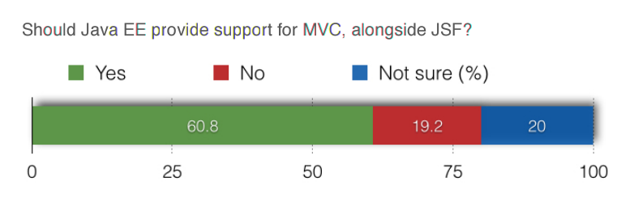

Java EE 8 Community Survey

JavaServer Faces
vs.
MVC 1.0
JavaServer Faces
=
Component Oriented
MVC 1.0
=
Action Oriented
Component Oriented
vs.
Action Oriented
Was passierte dann?
- Apache License 2.0
- Neue Infrastruktur (GitHub, CI, Webseite)
- Arbeit an Referenzimplementierung
- Erstellung des TCK
-
Java Community Process:
- Public Review (PR)
- Proposed Final Draft (PFD)
MVC 1.0
basiert auf
Java EE 8
JAX-RS Beispiel
@Path("/hello")
@Produces("application/json")
public class HelloResource {
@GET
public JsonObject greet() {
return Json.createObjectBuilder()
.add("message", "Hello JAX-RS!");
}
}
Controller
@Controller
@Path("/hello")
public class HelloController {
@GET
public String render() {
return "helloworld.jsp";
}
}
View
/WEB-INF/views/helloworld.jsp
<!DOCTYPE html>
<html>
<head>
<title>MVC Demo</title>
</head>
<body>
<h1>Hello world</h1>
</body>
</html>
Controller
@Controller
@Path("/hello")
public class HelloController {
@GET
@View("helloworld.jsp")
public void render() {
// ...
}
}
Das Modell
- javax.mvc.Models
- Basierend auf CDI
javax.mvc.Models
@Controller
@Path("/hello")
public class HelloController {
@Inject
private Models models;
@GET
public String greet() {
models.put( "message", "Hello world!" );
return "helloworld.jsp";
}
}
javax.mvc.Models
/WEB-INF/views/helloworld.jsp
<!DOCTYPE html>
<html>
<head>
<title>MVC Demo</title>
</head>
<body>
<h1>${message}</h1>
</body>
</html>
Views in MVC 1.0
- JavaServer Pages
- Facelets
JSP als View Technologie
models.put( "messages", Arrays.asList(
"Hello JCON 2019",
"MVC 1.0 rocks"
) );
<%@ taglib prefix="c" uri="http://java.sun.com/jsp/jstl/core" %>
<c:if test="${not empty messages}">
<ul>
<c:forEach var="message" items="${messages}">
<li>${message}</li>
</c:forEach>
</ul>
</c:if>
Custom ViewEngines
- Thymeleaf
- FreeMarker
- Velocity
- Handlebars
- Mustache
|
- StringTemplate
- Jade
- AsciiDoc
- JSR223
- React
|
Thymeleaf
@Controller
@Path("/thymeleaf")
public class ThymeleafController {
@Inject
private Models models;
@GET
public String render() {
models.put( "messages", Arrays.asList(
"Text #1", "Text #2", "Text #3"
) );
return "thymeleaf.html";
}
}
Thymeleaf
/WEB-INF/views/thymeleaf.html
<table>
<tr th:each="msg: ${messages}">
<td th:text="${msg}">
Some text
</td>
</tr>
</table>
|
<table>
<tr>
<td>Text #1</td>
</tr>
<tr>
<td>Text #2</td>
</tr>
<tr>
<td>Text #3</td>
</tr>
</table>
|
Formulare
public class HelloForm {
@MvcBinding
@FormParam("name")
private String name;
@MvcBinding
@FormParam("age")
private Integer age;
/* getter + setter */
}
Formulare
@Controller
@Path("/form")
public class FormController {
@Inject
private Models models;
@POST
public String post( @BeanParam HelloForm form ) {
models.put( "message", "Hello " + form.getName() );
return "form.jsp";
}
}
Validierung
public class HelloForm {
@MvcBinding
@FormParam("name")
@Size(min = 2, message = "Geben Sie Ihren Namen ein")
private String name;
@MvcBinding
@FormParam("age")
@Min(value = 18, message = "Sie müssen 18 Jahre sein")
private Integer age;
/* getter + setter */
}
Validierung
@Controller
@Path("/form")
public class FormController {
@Inject
private BindingResult bindingResult;
@POST
public String post( @BeanParam @Valid HelloForm form ) {
if( bindingResult.isFailed() ) {
models.put( "messages", bindingResult.getAllMessages() );
return "form.jsp";
}
// Verarbeitung des Forms...
}
}
MVC kann mehr...
- Einfache Redirects aus Controller
- Internationalisierung / Lokalisierung
- CDI Scope: @RedirectScoped
- CDI Events
- ViewEngine SPI
- HTML/JS Encoding/Escaping
Zeitplan
- ☑ Q3 2014 Expert Group formed
- ☑ Q1 2015 Early Draft
- ☑ Q4 2015 Early Draft 2
- ☑ Q1 2018 Public Review
- ☑ Q4 2018 Proposed Final Draft
- ☐ Q4 2019 Final Release